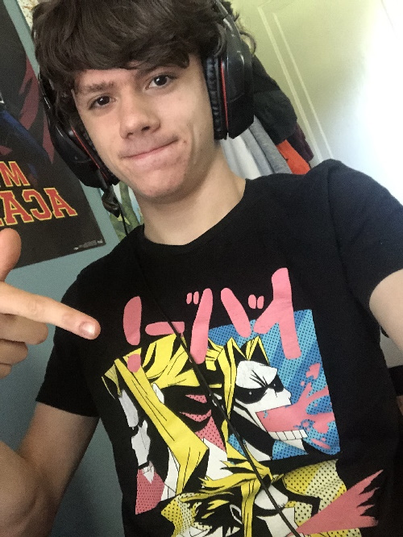

Hello! My name is Xander Goodwin. During high school my favorite hobby was running. I was a three season athlete and I had practice six days a week. It took a lot of my time but I had fun and made a lot of friends. When I was just beginning freshman year, my times were not considered very good. The fastest 5k I could run was over twenty two minutes and my mile times were in higher half of five minutes. However, by junior year my times improved substantially and I got my personal record for the mile, 4:43. During senior year, however, I began to lose interest. Not only that, but I began to suffer from sports induced asthma that didn’t allow me to get the times that I used to.
When I came to RIT, I decided that I was done with running on a team and decided that I would do it casually on my own. I ran the Brick City 5k over the weekend and even though it felt good to run in a race again, I still have no desire to return to running on a team. I’ve found a ton of enjoyment in a new hobby as well, playing competitive Smash Bros. I practice a lot and I go to the bi-weekly smash club tournaments here on campus. Even though I still have a long way to go before I really get good at the game I still find tons of enjoyment in competing every weekend, even if I can only manage to win a game or two before being knocked out.
